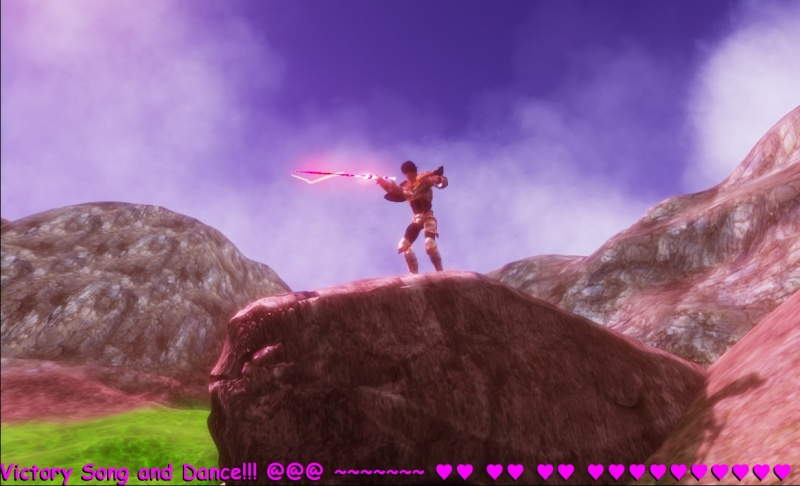
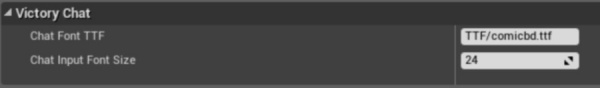
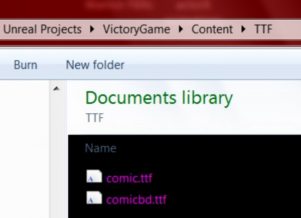

Slate, Edit Text Widget, Custom Rendering & Any TrueTypeFont
Contents
Overview
Code Author: ( )
In this tutorial I am showing you how to make an Edit Text widget so you can allow users to enter any kind of input while in-game!
Special features of my code:
- Set the default font of the Edit Text to use any True Type Font that you prefer!
- Easy function to change what True Type Font is being used, during runtime.
- Completely customize the actual display of the text that the user is entering, using any alternative text rendering setup that you prefer.
- Easy way to show / hide the Edit Text caret (the blinking vertical bar)
- Copy / Paste text to and from the OS clipboard!

Display Edit Text Contents Any Way You Want
In my game I did not want to show the Edit Text caret or the actual text , because you cant use shadowing currently with SEditableText.
I found a way to completely hide the SEditableText widget and pass the contents to a different display widget that had the visual rendering options that I wanted.
You can use the same logic I am using in this example to display the SEditableText contents in any way that you like!
I have comments in the code for how you can actually enable the Edit Text caret, and display the Edit Text.
Use Any True Type Font
You can use any True Type Font you want with my Edit Text Code !
I set up the HUD class so that you can use your HUD BP to enter a path for .ttf files!
Obtain .ttf files from windows/fonts by copying them :)
Move them into your Content directory, into some subfolder structure, and write out that folder structure in the HUD BP!
I also wrote a function for you to easily change the font of the Edit Text during runtime, using a new .ttf!


YourHUD
.H
// Copyright 1998-2013 Epic Games, Inc. All Rights Reserved.
#pragma once
#include "SVictoryEditText.h"
#include "YourHUD.generated.h"
class AYourHUD : public AHUD
{
GENERATED_BODY()
/** Default True Type Font. This should be the path off of Content that leads to your chosen TTF. Copy paste .ttf files from Windows/Fonts. Path should not include "Content". Ex: "TTF/comicbd.ttf" */
UPROPERTY(EditDefaultsOnly, BlueprintReadOnly, Category=VictoryChat)
FString ChatFontTTF;
UPROPERTY(EditAnywhere, BlueprintReadWrite, Category=VictoryChat)
int32 ChatInputFontSize;
/** Set a new .ttf for chat text! This should be the path off of Content that leads to your chosen TTF. Copy paste .ttf files from Windows/Fonts. Path should not include "Content". Ex: "TTF/comicbd.ttf" */
UFUNCTION(BlueprintCallable, Category=VictoryChat)
void SetChatFont(FString NewFontPath);
//Slate Core
public:
TSharedPtr<class SVictoryEditText> VictoryChat;
void JoyInit_VictoryChat();
//AHUD
public:
//Draw HUD
virtual void DrawHUD() OVERRIDE;
};
.CPP
//VictoryHUD extension by Rama
#include "VictoryGame.h"
#define VICTORY_ALLOW_TICK if(!GEngine) return; if(!GEngine->GameViewport) return;
AYourHUD::AYourHUD(const class FObjectInitializer& PCIP) : Super(PCIP)
{
ChatFontTTF = "TTF/comicbd.ttf";
ChatInputFontSize = 24;
}
//~~~~~~~~~~~~~~
// Joy Init Victory Chat
//~~~~~~~~~~~~~~
void AYourHUD::JoyInit_VictoryChat()
{
if ( ! VictoryChat.IsValid() ) return;
//~~~~~~~~~~~~~~~~~~~
//Visible
VictoryChat->SetShowChat(true);
//Cursor //No cursor!
//VictoryChat->SetCursor(EMouseCursor::None);//EMouseCursor::TextEditBeam);
//Font
SetChatFont(ChatFontTTF);
//Capture User Input immediately upon Creation
VictoryChat->SetSlateUIMode(true);
}
//~~~~~~~~~~~~
// Set Font
//~~~~~~~~~~~~
void AYourHUD::SetChatFont(FString NewFontPath)
{
if ( ! VictoryChat.IsValid() ) return;
if( ! VictoryChat->ChatDisplay.IsValid()) return;
if( ! VictoryChat->ChatInput.IsValid()) return;
//~~~~~~~~~~~~~~~~~~~~~~~~~~~~~
//Get Font from TTF Path
const FString ChatInputFont = FString( FPaths::GameContentDir() / *NewFontPath );
//Create Font Info
FSlateFontInfo NewFontInfo(ChatInputFont,ChatInputFontSize);
//Show / Hide Edit Caret
FSlateFontInfo CaretSize = NewFontInfo;
CaretSize.Size = 0; //set to 1 to show caret.
//Set !
VictoryChat->ChatInput->SetFont(CaretSize); //invisible input, just Caret
VictoryChat->ChatDisplay->SetFont(NewFontInfo); //Display Text
}
//~~~~~~~~~~~~
// Draw HUD
//~~~~~~~~~~~~
void AYourHUD::DrawHUD()
{
Super::DrawHUD();
//~~~~~~~~~
//~~~~~~~~~~~~~
VICTORY_ALLOW_TICK
//~~~~~~~~~~~~~
//~~~ Recreate Chat As Needed ~~~
// Thank you Wraiyth for this code structure!
if ( !VictoryChat.IsValid() )
{
SAssignNew(VictoryChat,SVictoryEditText)
.JoyHUD(this);
if ( VictoryChat.IsValid() )
{
GEngine->GameViewport->AddViewportWidgetContent(
SNew(SWeakWidget)
.PossiblyNullContent(VictoryChat.ToSharedRef())
);
//~~~ Joy Init ~~~
JoyInit_VictoryChat();
}
}
}
SVictoryEditText
.H
#pragma once
//Slate
#include "Slate.h"
//~~~ Forward Declarations ~~~
class AYourHUD;
class SVictoryEditText : public SCompoundWidget
{
//Slate Init
public:
SLATE_BEGIN_ARGS(SVictoryEditText) : _JoyHUD() //, _bKeepVisible(false)
{}
SLATE_ARGUMENT(TWeakObjectPtr<AYourHUD>, JoyHUD)
SLATE_END_ARGS()
//~~~~~~~~~~~~~~~~~~~~~~~~~~~~~~~~~~~~~~~~~~~
//~~~~~~~~~~~~~~~~~~~~~~~~~~~~~~~~~~~~~~~~~~~
//~~~~~~~~~~~~~~~~~~~~~~~~~~~~~~~~~~~~~~~~~~~
//~~~~~~~~
// HUD
//~~~~~~~~
public:
//HUD that owns this
TWeakObjectPtr<class AYourHUD> JoyHUD;
//~~~~~~~~
//Components
//~~~~~~~~
public:
//The edit text widget.
TSharedPtr< SEditableText > ChatInput;
//How the Edit Text is actually displayed
TSharedPtr< STextBlock > ChatDisplay;
//~~~~~~~~~~~~~~~~~
// Chat Visibility
//~~~~~~~~~~~~~~~~~
public:
void SetShowChat(bool MakeVisible);
//~~~~~~~~~~~~~~~~~~~~~
// Copy/Paste Text
//~~~~~~~~~~~~~~~~~~~~~
public:
FORCEINLINE void CopyToClipboard()
{
if(ChatInput.IsValid())
{
ChatInput->CopySelectedTextToClipboard();
}
}
FORCEINLINE void PasteFromClipboard()
{
if(ChatInput.IsValid())
{
ChatInput->PasteTextFromClipboard() ;
}
}
//~~~~~~~~~~~~~~~~~
// Chat Text Entry
//~~~~~~~~~~~~~~~~~
public:
//Set Slate UI Mode, Capture User Keyboard Input
void SetSlateUIMode(bool EnterSlateUI);
//~~~~~~~~~~~~~~~~~~~~~~~~~~~~~~~~~~~~~~~~~~~~~~
//Delegate called when the text is commited.
// @param InText The committed text.
// @Param InCommitInfo The type of commit (eg. Pressed enter, changed focus)
void OnChatTextCommitted(const FText& InText, ETextCommit::Type InCommitInfo);
//~~~~~~~~~~~~~~~~~~~~~~~~~~~~~~~~~~~~~~~~~~~~~~
//~~~~~~~~~~~~~~~~~~~~~~~~~~~~~~~~~~~~~~~~~~~~~~
// Text Changed Delegate!
void OnChatTextChanged(const FText& InText);
//~~~~~~~~~~~~~~~~~~~~~~~~~~~~~~~~~~~~~~~~~~~~~~
//~~~~~~~~~~~~~~~~~
// Base Input
//~~~~~~~~~~~~~~~~~
//SWidget.h
public:
//~~~ Keyboard Focused ~~~
virtual FReply OnKeyboardFocusReceived( const FGeometry& MyGeometry, const FKeyboardFocusEvent& InKeyboardFocusEvent ) OVERRIDE;
//~~~ Key Down ~~~
virtual FReply OnKeyDown( const FGeometry& MyGeometry, const FKeyboardEvent& InKeyboardEvent ) OVERRIDE;
//~~~ Mouse Down ~~~
virtual FReply OnMouseButtonDown( const FGeometry& MyGeometry, const FPointerEvent& MouseEvent ) OVERRIDE;
//Slate Base
public:
//Constructor
void Construct(const FArguments& InArgs);
//As Widget
TSharedRef<class SWidget> AsWidget();
//~~~ Tick ~~~
void Tick(const FGeometry& AllottedGeometry, const double InCurrentTime, const float InDeltaTime);
};
.CPP
#include "VictoryGame.h"
#include "SVictoryEditText.h"
void SVictoryEditText::Construct(const FArguments& InArgs)
{
JoyHUD = InArgs._JoyHUD;
ChildSlot
.VAlign(VAlign_Fill)
.HAlign(HAlign_Fill)
//~~~~~~~~~~~~~~~~~~~~
// Being Slate Construct Block
[
SNew(SOverlay)
+ SOverlay::Slot()
.VAlign(VAlign_Bottom)
.HAlign(HAlign_Left)
[
//~~~ Chat Input ~~~
SAssignNew(ChatInput, SEditableText)
//Function to call when text is entered
.OnTextCommitted(this, &SVictoryEditText::OnChatTextCommitted)
//Function to call when text is changed
.OnTextChanged(this, &SVictoryEditText::OnChatTextChanged)
//Stay and possibly enter multiple lines
.ClearKeyboardFocusOnCommit(false)
//Optional
//.MinDesiredWidth(500)
.Text(FText::FromString("Victory!"))
.Font(FSlateFontInfo(FPaths::EngineContentDir() / TEXT("Slate/Fonts/Roboto-Bold.ttf"), 24))
.ColorAndOpacity(FLinearColor(1,0,1,0)) //<~~~
//Chat input itself is hidden, display used instead
// for the shadowing, and as a demonstration
// of accessing the input text and displaying it elsewhere
// See Tick Function
]
+ SOverlay::Slot()
.VAlign(VAlign_Bottom)
.HAlign(HAlign_Left)
[
SAssignNew(ChatDisplay, STextBlock)
.Text(FText::FromString("Victory!!!!"))
.Font(FSlateFontInfo(FPaths::EngineContentDir() / TEXT("Slate/Fonts/Roboto-Bold.ttf"), 24))
.ColorAndOpacity(FLinearColor(1,0,1,1))
.ShadowColorAndOpacity(FLinearColor::Black)
.ShadowOffset(FIntPoint(-2, 2))
]
]; //End Slate Construct Block
//~~~~~~~~~~~~~~~~~~~~~~~~
}
//~~~~~~~~~~
// Base
//~~~~~~~~~~
TSharedRef<SWidget> SVictoryEditText::AsWidget()
{
return SharedThis(this);
}
//~~~~~~~~~~~~~
// Base Input
//~~~~~~~~~~~~~
//Keyboard Focussed
FReply SVictoryEditText::OnKeyboardFocusReceived( const FGeometry& MyGeometry, const FKeyboardFocusEvent& InKeyboardFocusEvent )
{
//Lock Mouse To Edit
return FReply::Handled().ReleaseMouseCapture().ReleaseJoystickCapture().LockMouseToWidget( SharedThis( this ) );
}
//~~~ Key Down ~~~
FReply SVictoryEditText::OnKeyDown( const FGeometry& MyGeometry, const FKeyboardEvent& InKeyboardEvent )
{
//Get Key Pressed
const FKey VKey = InKeyboardEvent.GetKey();
//ESC Pressed
if(VKey == EKeys::Escape)
{
//Exit!
SetSlateUIMode(false);
return FReply::Handled();
}
if(InKeyboardEvent.IsControlDown())
{
if( ! ChatInput.IsValid()) return FReply::Handled();
//~~~~~~~~~~~~~~~~~~~~~~~~~~
//CTRL + V = Paste
if(VKey == EKeys::V)
{
PasteFromClipboard();
}
//CTRL + C = Copy
if(VKey == EKeys::C)
{
//Copy All
FWindowsPlatformMisc::ClipboardCopy(*ChatInput->GetText().ToString());
//or you can use the highlighting of text method
//CopyToClipboard();
}
}
return FReply::Handled();
}
//~~~ Mouse Down ~~~
FReply SVictoryEditText::OnMouseButtonDown( const FGeometry& MyGeometry, const FPointerEvent& MouseEvent )
{
//Get Key Pressed
const FKey VKey = MouseEvent.GetEffectingButton();
//LMB Pressed
if(VKey == EKeys::LeftMouseButton)
{
//Exit!
SetSlateUIMode(false);
return FReply::Handled();
}
return FReply::Handled();
}
//~~~~~~~~~~~~~~~~
// Show Chat
//~~~~~~~~~~~~~~~~
void SVictoryEditText::SetShowChat(bool MakeVisible)
{
TAttribute<EVisibility> NewVisibility;
if(MakeVisible)
{
NewVisibility = EVisibility::Visible;
SetVisibility( NewVisibility);
ChatInput->SetVisibility( NewVisibility);
ChatDisplay->SetVisibility( NewVisibility);
}
else
{
NewVisibility = EVisibility::Hidden;
SetVisibility( NewVisibility);
ChatInput->SetVisibility( NewVisibility);
ChatDisplay->SetVisibility( NewVisibility);
}
}
//~~~~~~~~~~~~~~~~
// Chat Text Entered
//~~~~~~~~~~~~~~~~
void SVictoryEditText::OnChatTextCommitted(const FText& InText, ETextCommit::Type InCommitInfo)
{
if (InCommitInfo == ETextCommit::OnEnter)
{
if ( !InText.IsEmpty() )
{
if(ChatInput.IsValid())
{
// Add the string so we see it too (we will ignore our own strings in the receive function)
//AddChatLine( InText.ToString() );
// Clear the text
ChatInput->SetText(FText());
}
}
//Exit properly! Hides mouse and restores Viewport control
SetSlateUIMode(false);
}
}
//~~~~~~~~~~~~~~~~
// Chat Text Changed
//~~~~~~~~~~~~~~~~
void SVictoryEditText::OnChatTextChanged(const FText& InText)
{
if( ! ChatDisplay.IsValid()) return;
if( ! ChatInput.IsValid()) return;
//~~~ Update The Chat Display! ~~~
ChatDisplay->SetText(ChatInput->GetText().ToString() + FString(" "));
//single space to fix letter clipping, not sure why its clipping.
}
//~~~~~~~~~~~~~~~~
// Slate UI Mode
//~~~~~~~~~~~~~~~~
void SVictoryEditText::SetSlateUIMode(bool EnterSlateUI)
{
if(EnterSlateUI)
{
// Enter UI mode
FSlateApplication::Get().SetKeyboardFocus( SharedThis(this) );
if (ChatInput.IsValid())
{
FWidgetPath WidgetToFocusPath;
bool bFoundPath = FSlateApplication::Get().FindPathToWidget(FSlateApplication::Get().GetInteractiveTopLevelWindows(), ChatInput.ToSharedRef(), WidgetToFocusPath);
if (bFoundPath && WidgetToFocusPath.IsValid())
{
FSlateApplication::Get().SetKeyboardFocus(WidgetToFocusPath, EKeyboardFocusCause::SetDirectly);
}
}
}
else
{
// Exit UI mode
FSlateApplication::Get().SetFocusToGameViewport();
}
}
//~~~~~~~~~~~~~~~~
// Tick
//~~~~~~~~~~~~~~~~
void SVictoryEditText::Tick(const FGeometry& AllottedGeometry, const double InCurrentTime, const float InDeltaTime)
{
// Always tick the super.
SCompoundWidget::Tick(AllottedGeometry, InCurrentTime, InDeltaTime);
//~~~~~~~~~~~~~~~~~~~~~~~~~~~~~~
}
Code Excerpts
Copy Paste to OS Clipboard
//Ctrl is Down
if(InKeyboardEvent.IsControlDown())
{
if( ! ChatInput.IsValid()) return FReply::Handled();
//~~~~~~~~~~~~~~~~~~~~~~~~~~
//CTRL + V = Paste
if(VKey == EKeys::V)
{
PasteFromClipboard();
}
//CTRL + C = Copy
if(VKey == EKeys::C)
{
//Copy All
FWindowsPlatformMisc::ClipboardCopy(*ChatInput->GetText().ToString());
//or you can use the highlighting of text method
//CopyToClipboard();
}
}
Toggling User Input to/from Victory Edit Text
void SVictoryEditText::SetSlateUIMode(bool EnterSlateUI)
{
if(EnterSlateUI)
{
// Enter UI mode
FSlateApplication::Get().SetKeyboardFocus( SharedThis(this) );
if (ChatInput.IsValid())
{
FWidgetPath WidgetToFocusPath;
bool bFoundPath = FSlateApplication::Get().FindPathToWidget(ChatInput.ToSharedRef(), WidgetToFocusPath);
if (bFoundPath && WidgetToFocusPath.IsValid())
{
FSlateApplication::Get().SetKeyboardFocus(WidgetToFocusPath, EKeyboardFocusCause::SetDirectly);
}
}
}
else
{
// Exit UI mode
FSlateApplication::Get().SetFocusToGameViewport();
}
}
Capturing User Input
Key Presses
I check if the user presses the ESC key to cancel out of Edit Text Mode, restoring input to the main Game Viewport
FReply SVictoryEditText::OnKeyDown( const FGeometry& MyGeometry, const FKeyboardEvent& InKeyboardEvent )
{
//Get Key Pressed
const FKey VKey = InKeyboardEvent.GetKey();
//ESC Pressed
if(VKey == EKeys::Escape)
{
//Exit!
SetSlateUIMode(false);
return FReply::Handled();
}
return FReply::Handled();
}
Mouse Input
For my game I want the Edit Text Mode to end if the user presses LMB.
You can capture other mouse buttons and movement as well!
FReply SVictoryEditText::OnMouseButtonDown( const FGeometry& MyGeometry, const FPointerEvent& MouseEvent )
{
//Get Key Pressed
const FKey VKey = MouseEvent.GetEffectingButton();
//LMB Pressed
if(VKey == EKeys::LeftMouseButton)
{
//Exit!
SetSlateUIMode(false);
return FReply::Handled();
}
return FReply::Handled();
}
Related Tutorials
by Bleakwise!
Conclusion
Enjoy!
( )